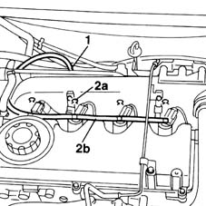

1060F52 Fuel return PIPE from INJECTORS - R.R.
- Path
- Procedures > 10 ENGINE UNIT > 1060 DIESEL FUEL INJECTION > 1060F injectors and lines > 1060F52 Fuel return PIPE from INJECTORS - R.R.
- Kind
- repair procedure (removal / refitting; the operation number is the code)
- Applies to
- engines: 1.9 JTD 8V; all production periods
- Interactive page
- https://sloeber94.github.io/elrnDB-fMltpl/en/#/2891408
Applies to: engines: 1.9 JTD 8V; all production periods
 Removing
Removing
 Refitting
RefittingOpen the bonnet lid.
1016A10 sound-proofing cover - r + r
1. Disconnect the pipe leading from the injectors to the fuel recovery manifold from the fuel return manifold pipe:
2. Undo clips (2a) and remove fuel recovery pipe (2b).

Applies to: engines: 1.9 JTD 8V; all production periods
Refitting
RemovingFit the pipes to the fittings on the injectors.
Secure the pipes using clamps.
Connect the pipe to the return manifold.